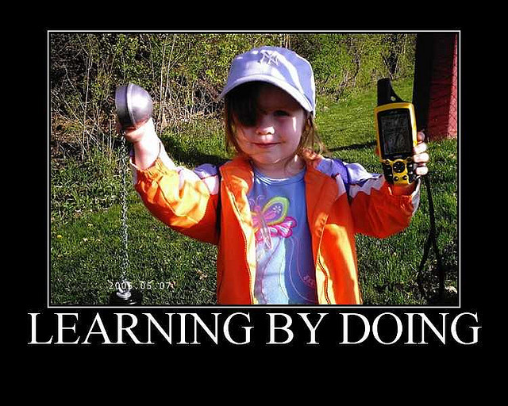

Web Development
using Ruby on Rails
By Prashant Anantharaman
+91-97-911-90892

About me
I am a Computer Science student at College of Engineering Guindy
Free Software Enthusiast
What's so special?
Why Rails?
Enjoy Programming
be productive
be happy

Installation
Using version managers like rbenv or rvm
Hello world
#include "stdio.h"
int main()
{
printf("Hello World");
return 0;
}
Hello world
public class Example
{
public static void main(String[] args)
{
System.out.println("Hello World");
}
}
Ruby
puts "Hello World"
Interactive ruby
Type small bits of ruby code, see it get executed
Simple Syntax
Parenthesis, Braces, Tab spaces- Optional
Variables
a = 5
b = 10
c = a + b
d = 11.4
word ="prashant"
Naming Conventions
Camel Case
firstName = "vysakh"
first_name="Vysakh"
Constants
Pi = 3.14
#Constants begin with Capital
In Ruby, everything is
Logical operators
if 1 == 1
puts "1 is equal to 1"
elsif 1 != 1
puts "1 is not equal to 1"
else
puts "Something else"
end
Loops
Lists
numbers = [1, 3, 55, 2999]
fruits = ["Mango", "Apple"]
mixed = [1, "Mango"]
Hashes and Symbols
names = {’’first‘‘ => ’’Mark‘‘}
#Strings are expensive
# ‘‘first’’ is a string
# :first is a symbol
names = {:first => ’’Mark‘‘}
Functions
def add a, b
a+b
end
puts add 1, 2
Classes
class Calc
def add a, b
a+b
end
class ChildCalc < Calc
end
c = Calc.new
puts c.add 4, 5
child = ChildCalc.new
puts child.add 3, 4
Introduction to Rails
Why convention over configuration?
Full stack framework?? WHAT?
It abstracts and manages all parts of a web application
Full stack framework?? WHAT?

MVC Example
Model
Controllers
Views
Routes
It is a map between the HTTP request and the method of a controller
Migration
Rake
Rake a simple ruby build program with capabilities similar to make.
namespace :my do
task :alarm do
puts ‘‘Turned off alarm.’’
end
end
Run this rake file with the command "rake my:alarm"
gem and bundler
gem: A RubyGem is a software package, commonly called a gem. Gems contain a packaged Ruby application or library.
bundler: Bundler is the way to manage gem dependencies in Rails
Installation and Creation
Installation :
$ gem install rails
Lets now create an app:
$ rails new appname
Lets try an app now
Start an app :
$rails s
$ rails g controller home index contacts about
Lets restart the server now
and go to "localhost:3000/home/index" and contacts
$ rails g scaffold blog title:string post:text
$ rake db:migrate
Restart server and open "localhost:3000/blogs"
Guides
To learn Ruby:
http://tryruby.org/Rails: